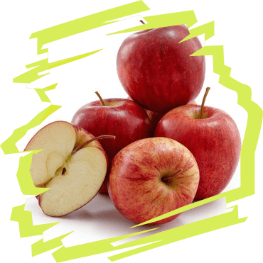
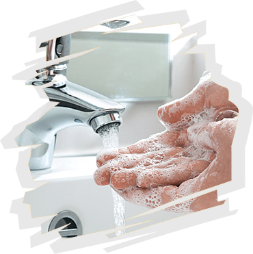
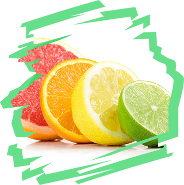

6 fundamentos básicos
de un estilo de vida saludable
El deporte

La comida sana
La actitud positiva ante la vida

Dormir lo suficiente

La higiene

Muchas vitaminas
El estilo de vida saludable suele asociarse con algo tedioso y aburrido. Sin embargo, en realidad no lo es.
El estilo de vida correcto ayuda a una persona a realizar sus planes, alcanzar metas, estar siempre en la cima y verse bien.
Seguramente sabes que la salud depende del sistema inmunológico.
Si el sistema inmune es fuerte, la persona rara vez se enferma y se recupera rápidamente. Viceversa, si el sistema inmunológico es débil, la persona se convierte en un visitante frecuente de clínicas y farmacias.
de que comprar medicamentos es costoso, esperar la cita del medico es aburrido y peligroso, verse mal y enfermarse constantemente es simplemente inaceptable.
El deporte
La comida sana
La actitud positiva ante la vida
Dormir lo suficiente
La higiene
Muchas vitaminas
Estos son algunos consejos para aquellos que desean comenzar un estilo de vida saludable:
Tus principales enemigos son la pereza y la falta de carácter.
Conquístalos, entonces será mucho más fácil mantener una vida saludable.
Ama lo que haces.
Si asistes al gimnasio sin quiererlo, si miras los alimentos saludables con disgusto, tarde o temprano te desatarás. Tienes que disfrutar de tu imagen, y no sufrirla.
Tira la tele y encuentra algo que te guste.
¿Comes sano e incluso asistes al gimnasio dos veces al día, pero al mismo tiempo, todo su tiempo libre del trabajo estas tumbando en la sofá como una foca? No llevas un estilo de vida saludable, simplemente lo imitas. Deja la TV, y llenar el tiempo libre de libros, deportes, pasatiempos útiles, paseos al aire libre, ocio activo. Este es un verdadero estilo de vida saludable.
Enamórate.
Es recomendable enamorarse de un aficionado al estilo de vida saludable, ya que con el apoyo de un ser querido es mucho más fácil comenzar a cuidar su salud.
Más optimismo y alegría.
Una sonrisa, la capacidad de disfrutarse de las pequeñas cosas, la esperanza para el futuro y una perspectiva optimista de la vida son tus amigos. Pero lloriqueos, lágrimas, pesimismo, descontento son los enemigos de los que tienes que deshacerte.
* prometemos no hacer spam :)
¡Gracias por subscribirse!